Triggered Subsystem を使ったエンジン タイミングのモデル化
この例では、4 シリンダー火花点火エンジンのモデルを示し、スロットルからクランクシャフト出力まで内燃エンジンをモデル化する Simulink® の機能のデモを行います。不必要に複雑にすることなく、必要に応じて、システムの動的挙動を記述する経験的関係で補足される、明確に定義された物理的原理を使用しました。
*メモ:閉ループ エンジン モデル (このモデルの拡張バージョン) を参照してください。
目次
解析と物理学
この例題では、重要な Simulink モデル化手法に重点を置いて、エンジン モデルの作成に関する概念と詳細について説明します。基本的なモデルでは、Simulink の拡張機能を使用して、時間ベースのイベントを高い忠実度でキャプチャします。このシミュレーション中に、Triggered Subsystem が離散バルブ イベントを介してインテーク マニホールドからシリンダーへの混合気の移動をモデル化します。これは、吸気の流れ、トルクの発生および加速の連続時間プロセスと同時に発生します。2 つ目のモデルでは、スロットル アクチュエータを介して閉ループのエンジン速度制御を提供する追加の Triggered Subsystem を追加します。これらのモデルは、スタンドアロンのエンジン シミュレーションとして使用できます。あるいは、トラクション コントロール システムの開発において、統合型車両やパワートレインのシミュレーションなど、より大規模なシステム モデル内で使用できます。
このモデルは、Crossley と Cook による発表結果 (1991 年) に基づいています。これは、4 シリンダー火花点火内燃エンジンのシミュレーションについて説明しています。また、Crossley と Cook の著作は、このモデルに基づくシミュレーションがどのように動力計テスト データと比較して検証されたかも示しています。(下にリストされている) 次の節では、Crossley と Cook によって識別されたエンジン モデルの重要な要素を解析します。
1) スロットル
2) インテーク マニホールド
3) 質量流量
4) 圧縮行程
5) トルクの発生と加速
- メモ:シミュレーションの精度を高め、システムの挙動をより厳密に再現するために、追加コンポーネントをモデルに追加できます。
スロットル
モデルの最初の要素はスロットル本体です。制御入力は、スロットル プレートの角度です。モデルがインテーク マニホールドに空気を導入する割合は、2 つの関数、つまり、スロットル プレート角度のみの経験的関数と、気圧とマニホールド圧の関数の積として表すことができます。マニホールド圧が低い (真空度が高い) 場合、スロットル本体を通過する流速は音速であるため、スロットル角度の関数のみになります。このモデルでは、方程式 1 に示す圧縮性方程式で切り替え条件を使用して、こうした低圧挙動を考慮します。
方程式 1
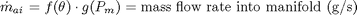
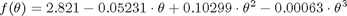
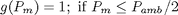
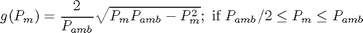

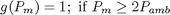
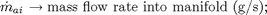
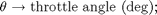
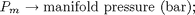
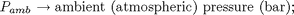
インテーク マニホールド
このシミュレーションでは、マニホールド圧の微分方程式としてインテーク マニホールドをモデル化します。入ってくる質量流量と出ていく質量流量の差は、時間に対する空気質量の正味の変化率を表しています。理想気体の法則によると、この量は、マニホールド圧の時間導関数に比例しています (方程式 2 を参照)。Crossley と Cook のモデルとは異なり (参照 3 から 5 も参照)、このモデルでは排気再循環 (EGR) を組み込まないことに注意してください。ただし、これは簡単に追加できます。
方程式 2
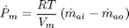
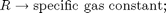
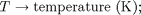
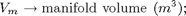
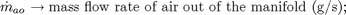
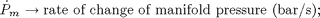
吸気質量流量
モデルがマニホールドからシリンダーに送り込む空気の質量流量は、経験的に導かれた方程式によって方程式 3 に記述されています。この質量流量は、マニホールド圧とエンジン速度の関数です。
方程式 3
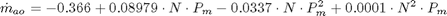
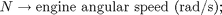
シリンダーに送り込まれる合計空気充填量を算出するために、シミュレーションでは、インテーク マニホールドからの質量流量を積分し、各吸気行程イベントの最後にこれをサンプリングします。これにより、吸気行程後、圧縮前に各シリンダー内に存在する合計空気質量が算出されます。
圧縮行程
直列 4 シリンダー 4 行程エンジンでは、クランクシャフトが 180°回転すると、連続する各シリンダーの点火が分離されます。この結果、各シリンダーは 1 クランク回転おきに点火します。このモデルでは、吸気、圧縮、燃焼、および排気の行程が同時に発生します (任意の時点で、1 つのシリンダーがそれぞれのフェーズにあります)。圧縮を考慮するために、各吸気充填量の燃焼は、吸気行程の最後から 180°のクランク回転分だけ遅延されます。
トルクの発生と加速
シミュレーションの最後の要素は、エンジンによって発生されるトルクを記述します。空気充填量の質量と、空気/燃料混合比、点火進角、エンジン速度に依存する経験的関係がトルクの計算に使用されます (方程式 4 を参照)。
方程式 4
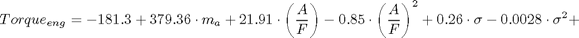
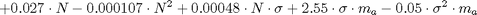
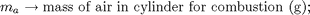
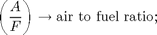
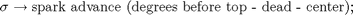
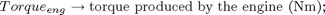
方程式 5 を使用してエンジン角加速度を計算します。
方程式 5
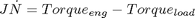
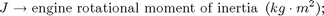
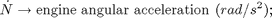
開ループ モデル
Simulink を使用してエンジン モデルに前述のモデル要素を組み込みました。次の節では、この実装のために行った決定と、使用する重要な Simulink 要素について説明します。この節では、Simulink 環境で複雑な非線形エンジン モデルを簡単かつ迅速に実装する方法を示します。Ford Motor Company® の Ken Butts 氏と協力してこのモデルを開発しました (2)。
図 1 に、このモデルの最上位レベルを示します。一般に、大きなブロックは、前述の概要にあるモデルの説明で与えらている高レベル リストの関数に対応していることに注意してください。Simulink の階層的なモデル化機能を利用して、図 1 のブロックの多くはより小さなブロックで構成されています。次の段落では、こうした小さなブロックについて説明します。
シミュレーションを開いて実行
このモデルを開くには、MATLAB® 端末に sldemo_engine と入力します (MATLAB ヘルプを使用している場合は、ハイパーリンクをクリックします)。
モデル ツール バーの [再生] ボタンを押してシミュレーションを実行してください。
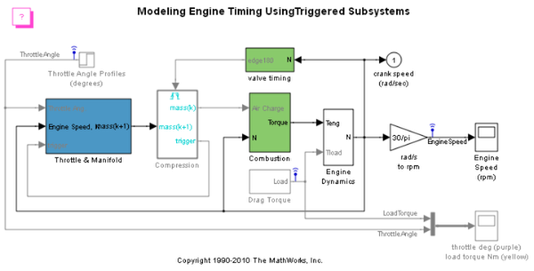 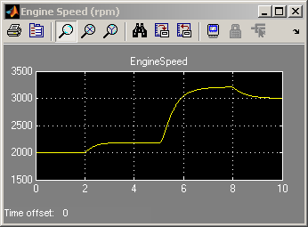 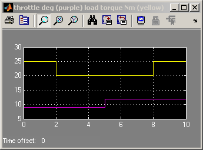図 1: エンジン モデルの最上位レベルとシミュレーション結果
- メモ:このモデルは、MATLAB ワークスペースの sldemo_engine_output という構造体に関連データのログを作成します。ログを作成する信号は青色のインジケーターを持ちます (モデルを参照)。信号ログの詳細は、Simulink ヘルプを参照してください。
スロットル/マニホールド
モデルで、Throttle & Intake Manifold サブシステムをダブルクリックしてこれを開きます。このサブシステムには、他の 2 つのサブシステム、つまり、Throttle サブシステムと Intake Manifold サブシステムが含まれています。Throttle サブシステムと Intake Manifold サブシステムを開いてそのコンポーネントを確認します。
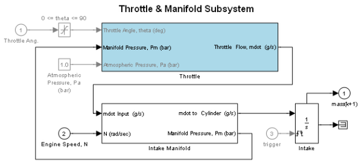 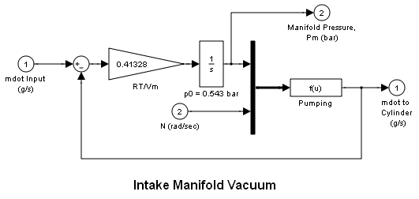
図 2: Throttle サブシステムと Intake Manifold サブシステム
スロットルおよびインテーク マニホールド サブシステムの Simulink モデルを図 2 に示します。スロットル バルブは非直線的に動作するため、3 つの入力を持つサブシステムとしてモデル化されています。Simulink は、方程式 1 で与えられている個々の方程式を関数ブロックとして実装します。これらは、多変数非線形方程式を記述するのに便利な方法を提供します。Switch ブロックは、圧力比を、1/2 に設定されているその切り替えしきい値と比較することによって、流れが音速であるかどうかを判断します (方程式 1)。音速域では、流速はスロットル位置のみの関数になります。流れの方向は、Sign ブロックで決定されているように、圧力の高い方から低い方へです。このことを考慮して、Min ブロックは圧力比が常に 1 以下になるようにします。
方程式 2 の微分方程式はインテーク マニホールド圧をモデル化します。Simulink 関数ブロックは、シリンダーへの質量流量、つまり、マニホールド圧とエンジン速度の関数を計算します (方程式 3 を参照)。
吸気と圧縮
積分器は、シリンダーの質量空気流量を (Throttle & Manifold サブシステム内にある) Intake ブロックに蓄積します。Valve Timing ブロックは、吸気と圧縮のタイミングを管理するために、特定の回転位置に対応するパルスを発行します。バルブ イベントは、カムの回転ごとに、あるいは、クランクシャフトが 180°回転するたびに発生します。各イベントは Compression サブシステムの 1 回の実行をトリガーします。次に、Compression サブシステム内のトリガー ブロックの出力が、吸気積分器をリセットするためにフィードバックされます。このように、両方のトリガーは概念的には同時に発生しますが、積分器出力はリセット直前に Compression ブロックによって処理されます。機能的には、Compression サブシステムは Unit Delay ブロックを使用して、吸気と各空気充填量の燃焼間に 180°(1 イベント期間) の遅延を挿入します。
1 つのシリンダーについて完全な 4 行程サイクルを考えてみましょう。吸気行程中に、Intake ブロックはマニホールドからの質量流量を積分します。クランクが 180°回転した後、吸気バルブが閉じ、Compression サブシステムの Unit Delay ブロックが積分器の状態をサンプリングします。この値、つまり、蓄積された質量充填量は、180°後で燃焼に使用できるように Compression サブシステムの出力時に使用できます。燃焼行程中に、クランクは発生したトルクにより加速します。最後の 180°、つまり、排気行程は、このシリンダーの次の完全な 720°サイクルに備えて、吸気積分器のリセットで終了します。
4 つのシリンダーの場合、4 つの Intake ブロック、4 つの Compression サブシステムなどを使用できますが、それぞれ 75% の時間アイドル状態になります。4 シリンダーすべてのタスクを 1 つのブロック セットで実行することによって、実装を効率化しました。これが可能であるのは、モデル化した詳細レベルで、各関数が一度に 1 つのシリンダーにしか適用されないためです。
燃焼
エンジン トルクは 4 変数関数です。このモデルは Mux ブロックを使用して、これらの変数を、Torque Gen ブロックへの入力を提供するベクトルにまとめます。関数ブロックが (方程式 4 で経験的に記述されている) エンジン トルクを計算します。Drag Torque ブロックのステップ関数で計算される、エンジンに負荷をかけるトルクが Engine Dynamics サブシステムで減算されます。この差を慣性で除算すると、加速度が得られます。これを積分してエンジン クランクシャフト速度を求めます。
シミュレーション結果のプロット
シミュレーションに次の既定入力を使用しました。
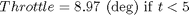

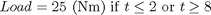
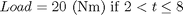
負荷トルクを補うようスロットルを調整してみてください。図 3 に、シミュレートされたエンジン速度と、シミュレーションを駆動するスロットル コマンド、これを妨げる負荷トルクを示します。
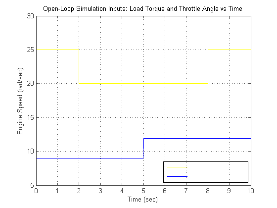図 3a: 開ループのシミュレーション入力
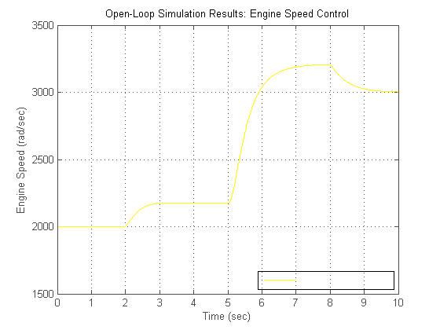図 3b: 開ループのシミュレーション結果
モデルを閉じる
モデルを閉じます。生成されたデータをクリアします。
まとめ
ここで説明したエンジン モデルなど、非線形の複雑なシステムをモデル化する機能は、Simulink の重要な機能の 1 つです。シミュレーション能力は、前述のモデルの提示において明白です。Simulink は、正確なタイミングのシリンダー吸気イベントも含めて、このタイプのモデルを作成する上で重要である、モデルの忠実性を保ちます。この基本的なエンジン モデルは Simulink の柔軟性を実証しています。
*メモ:閉ループ エンジン モデル (このモデルの拡張バージョン) を参照してください。
参照
[1] P.R. Crossley and J.A. Cook, IEE International Conference 'Control 91', Conference Publication 332, vol. 2, pp.921-925, 25-28 March, 1991, Edinburgh, U.K.
[2] The Simulink Model.Developed by Ken Butts, Ford Motor Company.Modified by Paul Barnard, Ted Liefeld and Stan Quinn, MathWorks®, 1994-7.
[3] J. J. Moskwa and J. K. Hedrick, "Automotive Engine Modeling for Real Time Control Application," Proc.1987 ACC, pp.341-346.
[4] B. K. Powell and J. A. Cook, "Nonlinear Low Frequency Phenomenological Engine Modeling and Analysis," Proc.1987 ACC, pp.332-340.
[5] R. W. Weeks and J. J. Moskwa, "Automotive Engine Modeling for Real-Time Control Using Matlab/Simulink," 1995 SAE Intl. Cong. paper 950417.